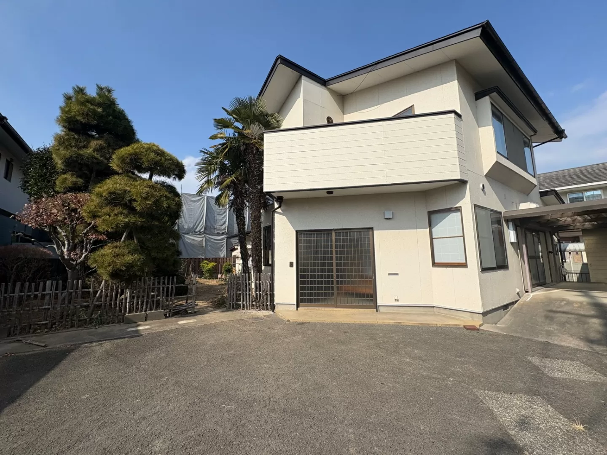
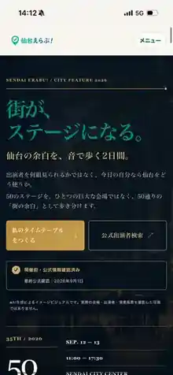

坂本 直哉
合同会社SGP 代表社員
- 生成AI / RAG
- Web / CRM
- 業務改善 / 自動化
- システム実装

SENDAI / ICHIBANCHO
仙台・一番町を拠点に、代表の坂本が直接対応します。パソコン、Excel、ホームページ、AI。「これ誰に聞けばいい？」からで大丈夫です。
契約前提なし。何を頼むか決まっていなくても大丈夫です。

WHO YOU TALK TO
最初の相談から、必要な設定や改善、実装まで代表が直接見ます。大きな会社のような分業はできません。その代わり、話が途中で変わらず、判断が早い。それが今のSGPの強みです。
合同会社SGP 代表社員
「パソコン詳しい人、誰かいない？」
くらいの相談からで構いません。
専門用語で説明するより、今どう困っているかを見せてもらう方が早いです。必要なら一緒に画面を見て、その場で直せることから始めます。
OUTSIDE THE DESK
ITの話だけだと、どんな人か伝わらないので。最近続けていることを、少しだけ。
ジャズはFブルースや「Bags' Groove」、クラシックはハノンとブルグミュラー。まだ基礎ばかりですが、音が波になり、デジタルになり、人の感情まで届く。そのつながりが面白くて続けています。
毎回、自分の下手さに打ちひしがれながら練習中です。ヴァイオリンも練習中です。鍵盤と違い、指や弓のわずかな違いで音程も音色も変わる。人の身体というアナログな入力から音が生まれる感覚が新鮮で、かなり苦戦しながら続けています。
こちらも、まだまだです。取引先や経営者の方とご一緒する機会があり、会議室とは違う場所で長い時間を共有すると、仕事だけでは見えない人柄を知れると感じています。
とはいえ、普通にもっと上手くなりたいです。WHAT I DO
ITコンサルの資料を増やすより、目の前の仕事を少し楽にする。必要なら、その先まで作ります。
PC、Excel、LINE、Google、Web、AI。困っていることをそのまま持ってきてください。
設定、整理、自動化など、今ある道具で直せることはなるべく小さく直します。
既存ツールでは足りない時だけ、システムやAIの実装を別途お見積りします。
「ITのことをまず聞ける人」を社外に置くための入口プランです。
MY TOOLS
「おすすめ50選」ではなく、SGP自身が仕事で使っているものだけ。ツールを売るためではなく、仕事を早くするために使います。
PROOF
実績は、公開できるものだけ載せます。まだ実績が少ないなら、無理に多く見せません。仕事が増えるたびに、この場所を増やしていきます。
仙台のジャズフェスで、897の演奏枠から自分に合う一日を組み立てる体験を企画・設計・実装。
実装を見る →
WHY / HOW
ノウハウ記事を大量に並べる代わりに、SGPが何のために存在し、どう仕事をする会社なのかを残します。
ICHIBANCHO / SENDAI
まず30分、今困っていることをそのまま聞かせてください。